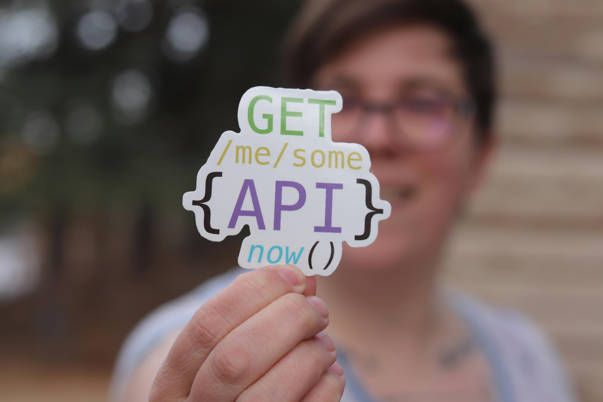
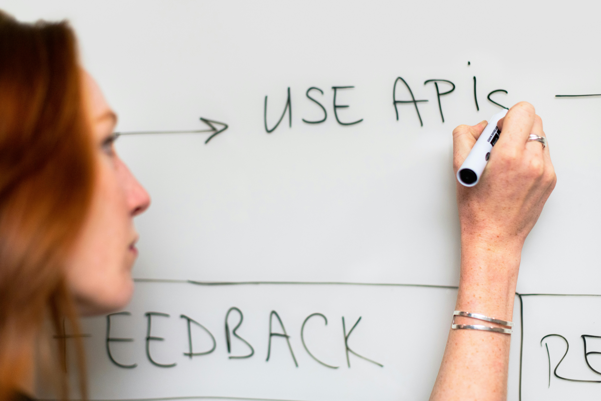

O que uma API RESTful contém?
Uma API RESTful contém endpoints organizados, usa métodos HTTP (GET, POST, PUT, DELETE), troca dados em JSON, retorna códigos de status, implementa autenticação e pode ser versionada.
Como consumir?
Consumir uma API é enviar uma requisição para um endereço e receber dados de volta, geralmente em JSON, para usar no seu sistema.
Quais tipos existem?
Existem vários tipos de API: REST (simples e via HTTP), SOAP (estruturada com XML), GraphQL (permite escolher dados), WebSocket (tempo real) e locais (usadas no próprio sistema).
O que faz uma API?
Uma API permite que sistemas diferentes se comuniquem trocando dados e comandos de forma padronizada.
Boas Práticas

Qual a diferença entre uma API Rest e uma Soap?
API SOAP e RESTful
A principal diferença é que REST é mais simples, usa HTTP e geralmente troca dados em JSON, enquanto SOAP é mais rígida, usa XML e segue um padrão formal com contratos.

Onde e quando posso testar uma API?
API SOAP e RESTful
Você pode testar uma API usando ferramentas como Postman ou diretamente no código. Isso pode ser feito durante o desenvolvimento ou para verificar o funcionamento da API. O teste ajuda a garantir que a comunicação e os dados estão corretos.
Onde encontrar material sobre API?
API SOAP e RESTful
Existem várias APIs gratuitas para aprender, como a JSONPlaceholder (fake data), a OpenWeather (dados meteorológicos) e a Rick and Morty API (dados do seriado). Essas APIs permitem testar requisições e praticar o consumo de dados sem custos. Elas são ótimas para iniciantes experimentarem integrações e entenderem como as APIs funcionam.